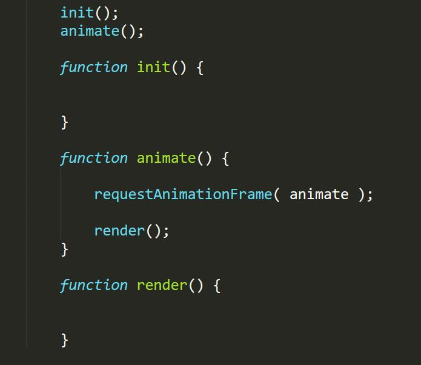

Chaos
TalkingData
可视化工程师
计算机图形学是研究通过计算机将数据转换 为图形，并在专门显示设备上显示的原理，方法和 技术的学科
是一门研究从抽象的几何图元生成真实感图像 的学科，又可以叫做图像合成（ Image Synthesis）或者图像生成（ Image Generation）
通俗来说：
输入是几何图形，输出是二维的图像
主要目的是生成场景、物体的几何图元描述
推荐开源工具blender
http://www.bilibili.com/video/av909518/
主要研究如何快速、真实地将由建模步骤生成 的几何图元转换成图像
Three.js主要实现这部分的代码
三维计算机动画：利用图形渲染程序生成一系列景物和角色运动的连续画面
Three.js 的动画比较孱弱，不是教学重点
解析几何
线性代数
javascript
不会数学没关系 至少会javascript
现今程序员的情况好多了-只要有一台便宜的二手电脑，一张Linux光盘和一个互联网帐户，你就已经拥有了把自己提升到任何级别的编程水平所需的全部工具
--John D. Carmack
广告
可视化
VR&&AR
游戏
小白用 editor 用直观的方式学习基本的概念
初学者看example
熟悉的人用文档检索API
进阶系统学习计算机图形图像
高手从资料到源码实现
PS：高手爱咋咋的别听我的
使用editor 感性化认识Three.js
使用Three.js 源码实现个地球
看一下example (时间允许)
看一下源码结构 (时间允许)
Scene
Renderer
Camera
Object
感性认识，只讲能让程序跑起来最少参数
只介绍透视相机
近大远小
类似人眼
THREE.PerspectiveCamera(fov, aspect, near, far)
fov是视景体竖直方向上的张角，拉近拉远镜头
aspect等于width / height，相机横纵比例，设置为canvas的宽高，否则或被拉瘪
near和far分别是照相机的近裁面，远裁面，均为正值，且far应大于near。
Geometry+Material
THREE.SphereGeometry(radius, widthSegments, heightSegments)
THREE.MeshBasicMaterial({
map:THREE.ImageUtils.loadTexture( "textures" )
}
放置物体
场景管理，层次模型
渲染器
渲染器Object，不可见，只是当作一个接口用就好了
var renderer = new THREE.WebGLRenderer();
renderer.render(scence,camera);
editor演示时间
先初始化，然后进行一个大循环，每一帧更新
canvas 3d渲染器
canvas_geometry_cube
css3 3d渲染器
css3d_periodictable
svg渲染器
svg_sandbox
软件 3d渲染器
software_sandbox
Editor ：简单的可视化编辑器
Examples目录：所有的例子，参考来实现
Src目录：R79 语法ES6，很好的数学，颜色，几何代码库， R25 最早实现THREE.WebGLRenderer，可以看看基本的渲染流程
Utils目录：converters，exporters模型导出工具
跑起了一个地球demo，这次我们讲一下如何绘制地球上的点，主要涉及到如何使用粒子系统，以及简单的交互。其中算法涉及到将经纬度坐标转化到球体上，也就是将经度度转化为笛卡尔坐标系等些简单的gis知识